Neural Radiance Field!
This project aims to build a simple neural radiance field.
Part 0: Calibrating Your Camera and Capturing a 3D Scan
4 sections in totalTo calibrate my camera and get its parameters, I printed out the calibration tags fetched from the course project website, used my iphone to took 49 pictures of it from muitiple angles and perspectives, and fed the source images to a python script to calculate the camera intrinsics and distortion coefficients
 my calibration dataset
my calibration dataset my calibration result
my calibration resultIt is proven that the calibration result is precise as the reprojction error is just 0.6337 pixel. the camera configuration is then saved to camera_params.npz for further usage.
-
For Nerf dataset preparation, I took 52 pictures of two pine cones together with my ArUco tag from multiple angles and perspectives to serve as the dataset for Nerf construction
 my Nerf source dataset
my Nerf source dataset my Nerf source dataset
my Nerf source dataset
After figuring out the camera intrinsics and collecting the Nerf source dataset, I wrote a script to figure out the extrinsic parameter w.r.t each Nerf source picture, and visualized them using the python package Viser.
 Angle 1
Angle 1 Angle 2
Angle 2It is shown that the extrinsic parameters are correct, as the rays are pointed towards the world coordinate center.
Finally I undistorted my images and package everything into a dataset format that I can use for training NeRF in the later parts of this project.
 Final dataset preparation for Nerf
Final dataset preparation for Nerf
Part 1: Fit a Neural Field to a 2D Image
1 section in totalIn this section I trained a basic neural network to realize image recovering from pixel coordinates. The network has 4 layers, each with width of 256, trained using a learning rate of 1e-2. To help the network learning more details of the picture, I defined the highest positional encoding frequency order to be 10.
 My model archietecture and hyperparameters
My model archietecture and hyperparametersI used this configuration to train the fox image and my own image,here are the results of my training progression:
FOX IMAGE
 original fox picture
original fox picture fox picture predicted by my model
fox picture predicted by my model iteration 1
iteration 1 iteration 50
iteration 50 iteration 100
iteration 100 iteration 200
iteration 200BREAKFAST IMAGE
 original fox picture
original fox picture fox picture predicted by my model
fox picture predicted by my model iteration 1
iteration 1 iteration 50
iteration 50 iteration 100
iteration 100 iteration 200
iteration 200-
Here are the corresponding PSNR curves:
 PSNR for fox picture
PSNR for fox picture PSNR for breakfast picture
PSNR for breakfast picture -
Finally I compared two choices of max positional encoding frequency (L=4; L=10) and 2 choices of width (W=64; W=256)
 final result for L=4 and W=64
final result for L=4 and W=64 final result for L=4 and W=256
final result for L=4 and W=256 final result for L=10 and W=64
final result for L=10 and W=256
final result for L=10 and W=64
final result for L=10 and W=256With these four settings, we can clearly see how the positional encoding frequency L and the network width W affect the reconstruction. When L is small (L=4), the model can only reproduce coarse, low-frequency structures, so the results look blurry even with a wider network. Increasing the width helps a bit, but the details are still missing. With a higher frequency (L=10), the model recovers much sharper textures. A small width (W=64) still leaves some artifacts, but using a wider network (W=256) produces the cleanest and most detailed result. Overall, L controls how much fine detail the model can represent, and W controls how well it can fit those details.
Part 2: Fit a Neural Radiance Field from Multi-view Images
1 section in totalIn this section, I managed to load data from Lego scene provided in the course website, and plot the cameras, rays, and samples in 3D using Viser.
To achieve this , firstly I wrote a function transform(c2w, x_c) to transform camera coordinate to world coordinate. Then I wrote a function pixel_to_camera(K, uv, s) to transform pixel coordinates to camera coordinates, given arbitary depth s. Finally I wrote a function pixel_to_ray(K, c2w, uv, depth) to get the unit ray that shoot from a certain pixel of the camera. The detailed implementation is shown below.
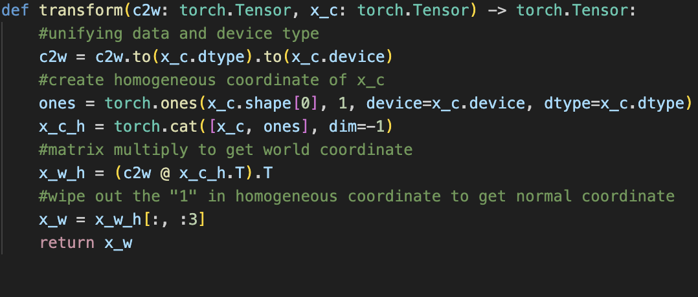transform(c2w, x_c)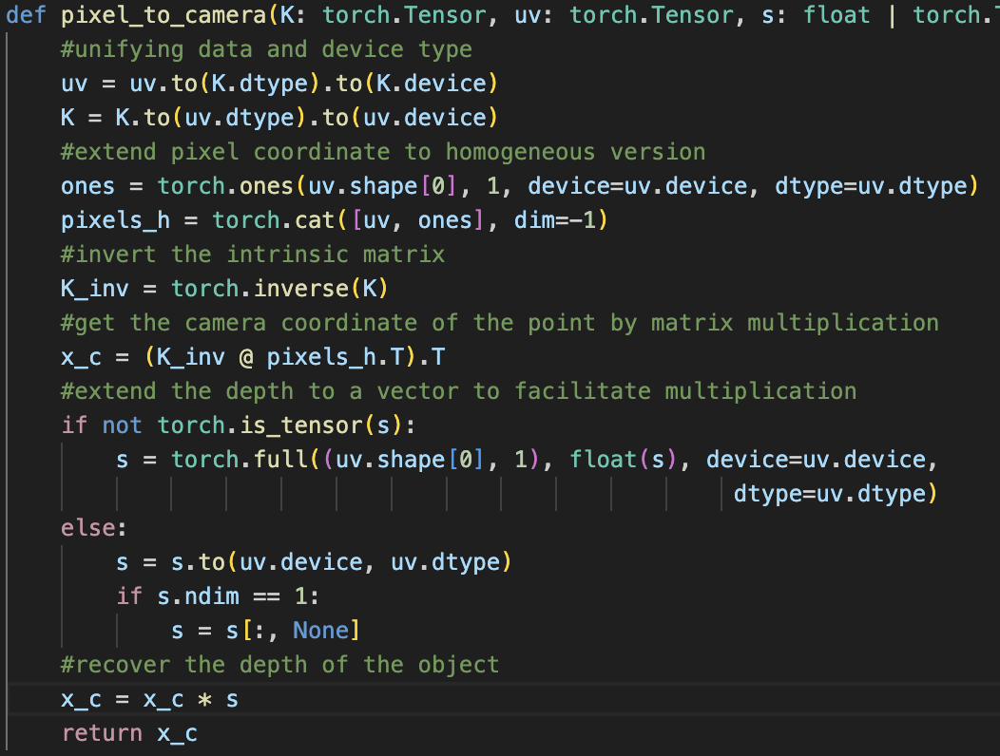pixel_to_camera(K, uv, s)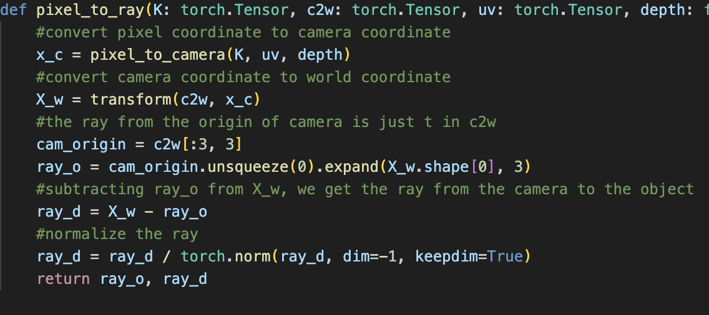pixel_to_ray(K, c2w, uv, depth)I used the second method mentioned in the official website, which randomly pick N rays and sample along them finally return the world coordinates of those points. The detailed procedure is shown in the picture below
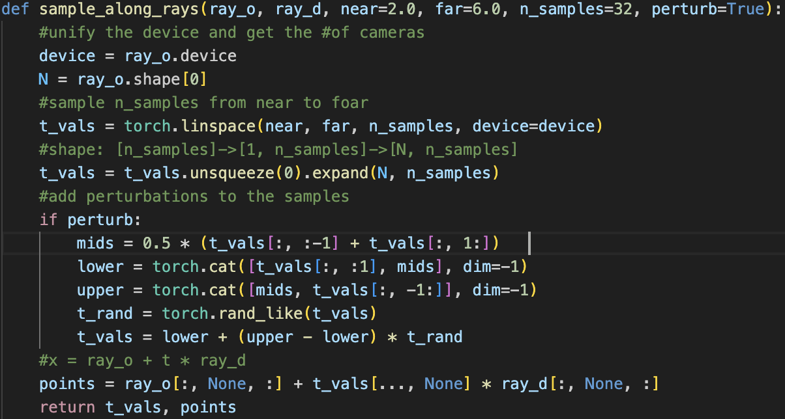Sample along rays function-
After doing the above procedure, I integrate the above tools to a RaysDataset class. This RaysDataset class precomputes all rays for every training image so we can sample them efficiently during NeRF training. It builds a pixel grid, converts each pixel into a ray using the camera intrinsics and extrinsics, and stores the ray origins, directions, and corresponding RGB values in flattened form. During training, we can randomly draw a batch of rays from the entire dataset or from a specific camera for debugging. This makes the dataloader simple, fast, and convenient for both global sampling and visualization in Part 2.3.
Then, I implemented a visualization function visualize_random_rays(dataset, K, num_rays, n_samples=) that helps visualize the dataset using Viser, following the code structure provided in the official website. These are two of the visualized results:
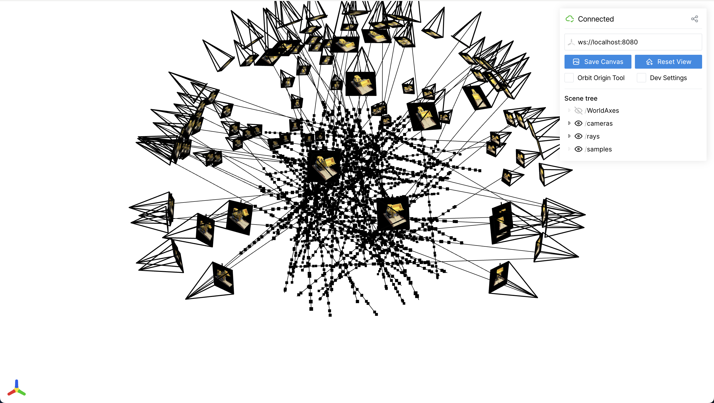Visualization with sampled rays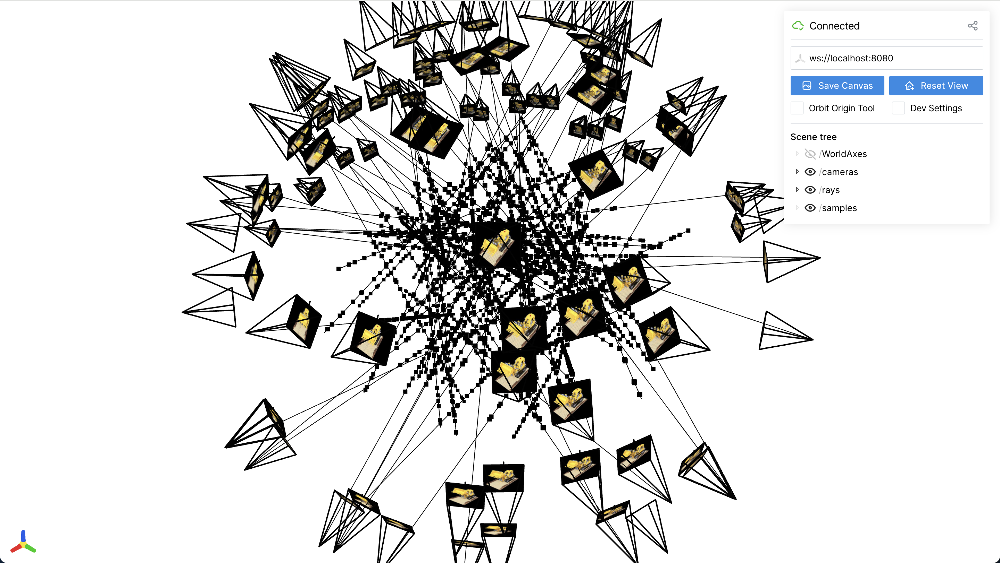Visualization with sampled rays
In this section, I managed to train a Nerf using the lego dataset.
To achieve this , firstly I implemented the nerf model.the NeRF model follows the standard design proposed in the original paper. I apply sinusoidal positional encoding to both 3D positions and view directions, using higher-frequency bands for positions and lower-frequency ones for directions. The network is built as an eight-layer MLP with a skip connection at the middle layer, which helps preserve high-frequency details during training. The density (sigma) and color branches are separated: sigma is predicted directly from the spatial features, while RGB is produced by combining learned features with the encoded viewing direction. A final sigmoid ensures valid color outputs.
To train the NeRF model, I implemented the volume rendering function as indeicated in the instruction. Then, I randomly sample a large batch of rays at each iteration and generate points along them with stratified sampling. The network is optimized using Adam with a learning rate of 5 \times 10^{-4}, batch size 8192, and 64 samples per ray. I trained for 5000 iterations on Google Colab T4 GPU. During training, I rendered a validation image every 250 iterations to track progress. PSNR is used as the main evaluation metric, and I log both training loss and validation PSNR to monitor convergence. This setup provides stable optimization and reproduces the expected NeRF performance on the Lego dataset. Here are the rendering results during training:
the first iteration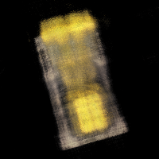the 250th iteration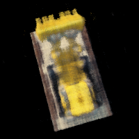the 750th iteration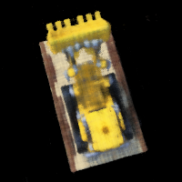the 1500th iteration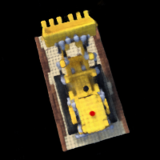the 5000th iterationAnd here is the PSNR curve:
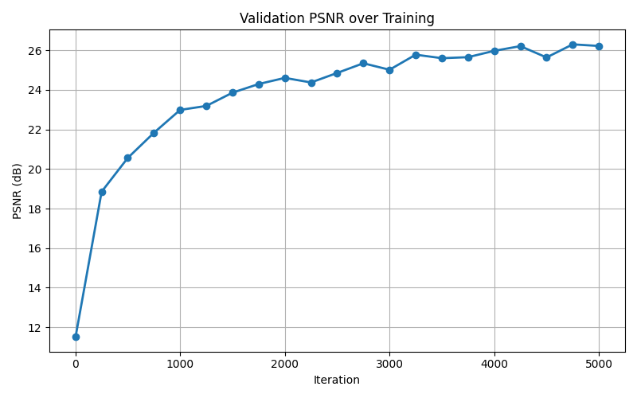the PSNR curve during trainigFinally, here is the GIF of camera circling the lego car
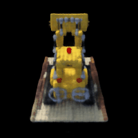Spherical rendering video of the Lego-
Then I tested using my own dataset. I found that near=0.3 far=0.7 is suitable for my dataset. I set n_samples=64, batch_size=4096, max_iters=5000, lr=5e-4, and the rest of the hyperparameters are the same as above.During implementation, I found that the model failed to converge when trained on my first set of images. The PSNR stayed extremely low and the rendered results were almost blank. After debugging, I realized the issue was not in the code, but in the dataset: most views contained large backgrounds, very small objects, and almost no parallax. NeRF simply couldn’t recover meaningful geometry. To fix this, I reshot the entire dataset, keeping the object centered, increasing the number of viewpoints, and making sure the camera moved around it in a full circle. After these adjustments, training became much better, though the outcome isn't satisfying enough.
 my new dataset after realizing the problem
my new dataset after realizing the problemHere are the progress during training:
the first iteration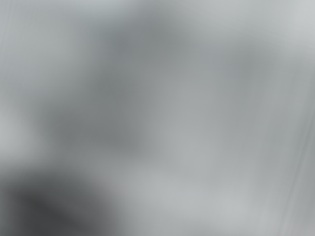the 250th iteration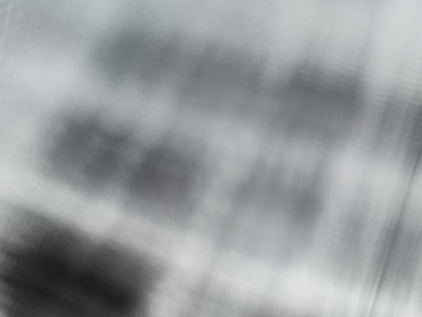the 500th iterationthe 1000th iteration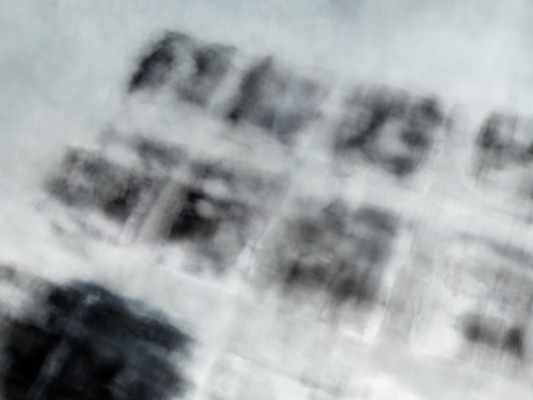the 2750th iteration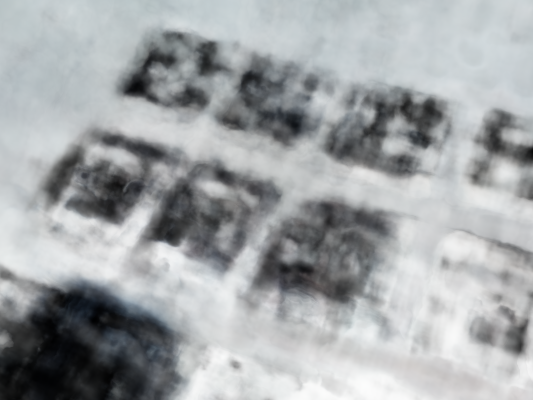the 5000th iterationAnd here is the PSNR curve and Loss function:
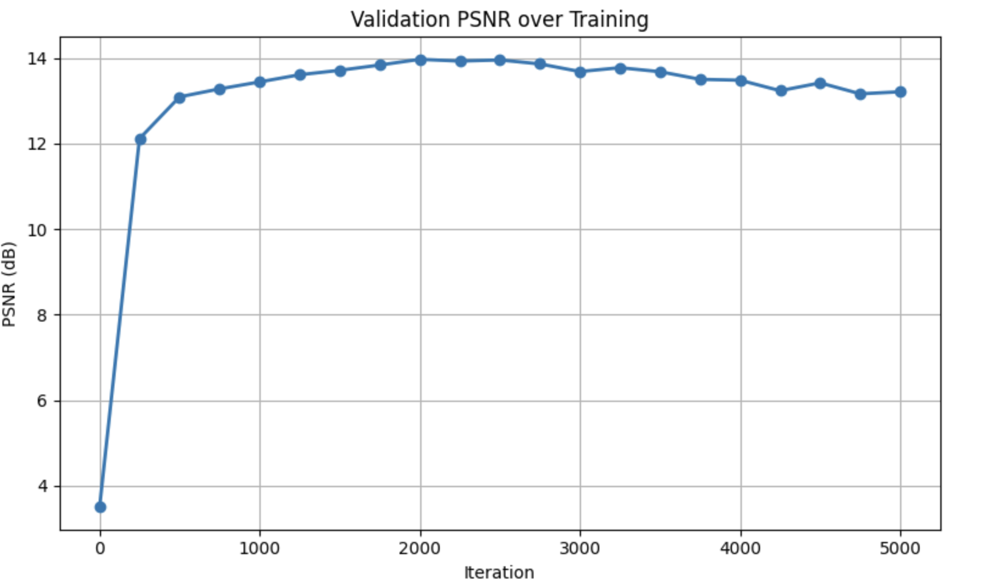the PSNR curve during trainig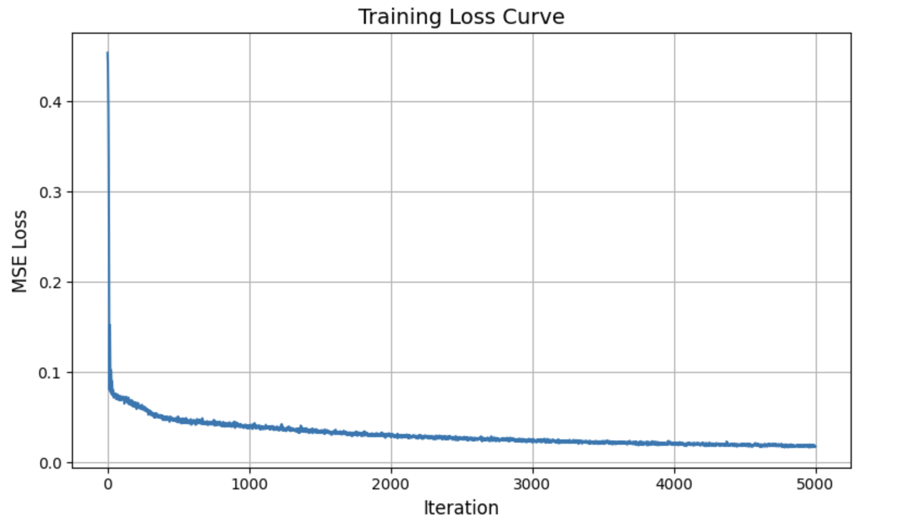the LOSS curve during trainigFinally, here is the GIF of camera circling the lego car
 Spherical rendering video of my own dataset
Spherical rendering video of my own dataset